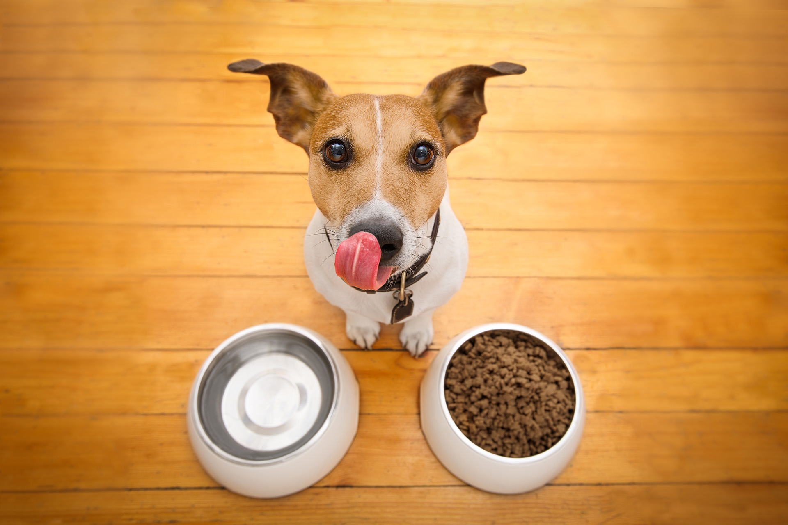
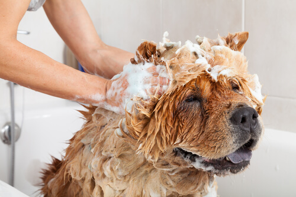

Consejos de Salud
Visitar regularmente el veterinario
En la primer visita de nuestra mascota al veterinario, este se encargará de revisar su estadode salud y descartar cualquier patología, además de establecer el plan de vacunación y escoger las vacunas adecuadas para cada animal, según el riesgo de exposición a ciertas enfermedades y la zona de residencia. Debido a esto, no existe un calendario de vacunación único.

Proporcionarle una alimentación sana
Utilice alimentos saludables que cubran todas las necesidades nutricionales de su mascota, aportando todos los elementos necesarios para un correcto crecimiento y desarrollo de la mascota, desde sus primeros años de vida hasta su etapa adulta. Tenga en cuenta que las necesidades de su mascota van cambiando a lo largo de su vida, por lo que deberá proporcionarle lo que el animal necesite dependiendo de su estado fisiológico. Además es aconsejable repartir las comidas para evitar sobrecargar al animal y que tenga así mejores digestiones. Tenga siempre a su disposición agua fresca y limpia para que pueda hidratarse con regularidad.
No duescuide su limpieza
Deberá realizarle un aseo periodico para asi poder detectar y tomar medidas necesarias en caso de tener parasitos externos (como pulgas, garrapatas, etc...) y enfermedades de la piel.
Desparasite con frecuencia a su mascota.
La desparasitación de las mascotas debe llevarse a cabo antes de iniciar el suministro de las vacuna, porque además de eliminar los parásitos, el antiparasitario estimula las defensas y ayuda a que la vacuna produzca un mejor efecto inmune en los animales.

Evita los cambios bruscos de temperatura.
Evita las altas temperaturas en verano, dale agua fresca y limpia frecuentemente, evita los ejercicios intensos durante las horas de más calor, no olvides a tu mascota dentro del coche y evita las situaciones de estrés. Recuerda que con el calor los animales puede que no tengan tanto apetito. En invierno, al haber bajas temperaturas los animales necesitan ingerir más cantidad de energía por lo que puede aumentar su apetito, así que reparte las comidas para evitar sobrecargar su sistema digestivo.